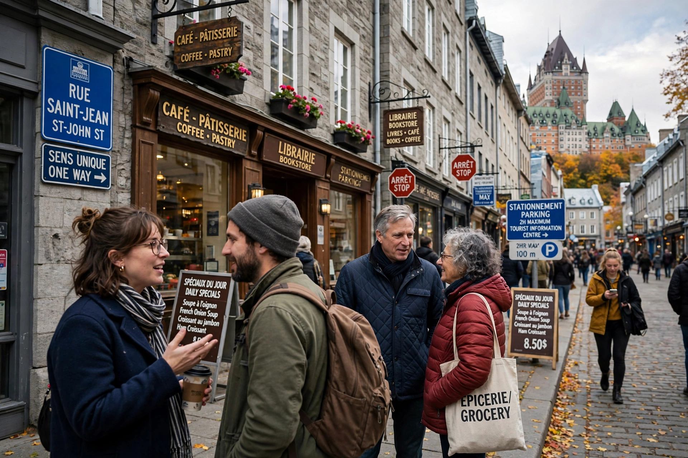

Canadian French (French: français canadien) is the French language as spoken in Canada, including the varieties used in Quebec, Acadia and francophone communities across the country. About 7 million Canadians speak French as a first language.
| Canadian French | |
|---|---|
 | |
| Region | Canada, chiefly Quebec |
| Language family | Romance > French |
| Official status | Federal Canada; Quebec; New Brunswick |
Principal varieties are Quebec French, Acadian French (with the chiac contact variety in New Brunswick), and Franco-Ontarian and western varieties. Canadian French retains features of 17th- and 18th-century colonial French and has distinctive vocabulary for local realities, e.g. char (car), dépanneur (corner store), magasiner (to shop), alongside standard forms used in formal registers.
French is one of Canada's two official languages, protected federally by the Official Languages Act and in Quebec by the Charter of the French Language (Bill 101), overseen by the Office québécois de la langue française.
Recreated from memory.